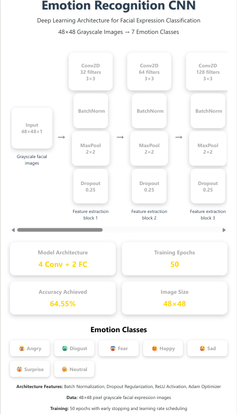
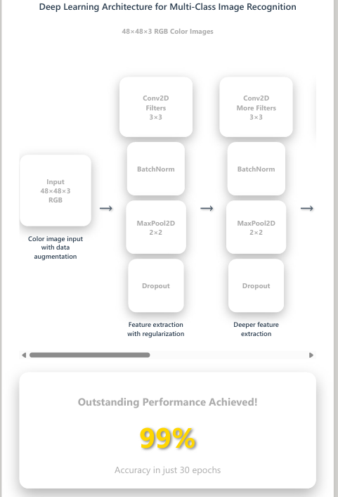
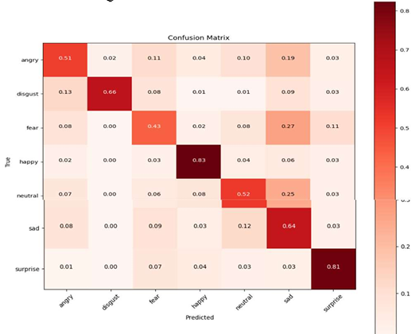
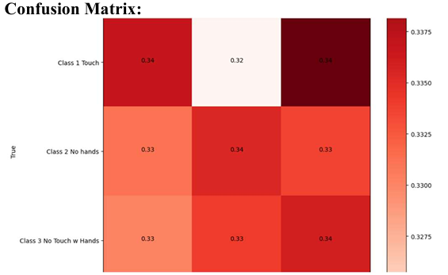

Abstract
This project focuses on developing and optimizing Convolutional Neural Networks (CNNs) for image classification. Two datasets were used: one for facial expression recognition (35,887 images, 7 classes) and another custom dataset of hand gestures (3 classes). The study evaluates performance via accuracy metrics, confusion matrices, and learning curves.
Techniques Applied
- Data Cleaning and Organization (train/validation/test splits)
- Image Resizing (48x48 grayscale and 112x112 RGB)
- Data Augmentation with Keras ImageDataGenerator
- Convolutional Layers with ReLU Activation
- Batch Normalization for faster convergence
- MaxPooling to reduce dimensionality
- Dropout Layers to prevent overfitting
- Adam Optimizer with learning rate scheduling
- Confusion Matrix for class-wise performance
- Training and Validation Accuracy/Loss Visualization
Datasets
-
Emotion Recognition: 35,887 images across 7 classes (happy, sad, angry, fear, surprise, disgust, neutral).
[Kaggle Link]
-
Don’t Touch Your Face: Custom-collected dataset with 3 classes (Touch, No Hands, No Touch with Hands) from student images.
Model Architecture Overview
Model A: Facial Expression Recognition
- Input: 48x48 grayscale images
- 4 Convolutional Layers with ReLU and Batch Normalization
- 2 Fully Connected Layers with Dropout
- Trained for 50 epochs
- Result: ~64.5% validation accuracy

Model B: Don’t Touch Your Face
- Input: 112x112 RGB images
- Convolutional + MaxPooling layers with Batch Normalization
- Dense Layer with 1024 units and 50% Dropout
- Trained for 30 epochs
- Result: ~99% validation accuracy

Results and Evaluation
We analyzed model performance using accuracy, loss curves, and confusion matrices.
Sample Training & Validation Curves


Sample Confusion Matrix (Model A)

Sample Confusion Matrix (Model B)

Discussion
Future improvements could include data augmentation strategies, facial landmark detection for better alignment, ensemble methods with other modalities (e.g., body gestures), and feature dimensionality reduction using PCA. These can improve classification accuracy and model robustness.
References
- Ketan Sarvakar et al., Facial emotion recognition using convolutional neural networks, Materials Today: Proceedings, 2023.
- Zhu D et al., Facial Emotion Recognition Using a Novel Fusion of CNN and LBP, Comput Intell Neurosci, 2022.
- Michelin et al., FaceGuard: A Wearable System To Avoid Face Touching, Frontiers in Robotics and AI, 2021.
- Additional resources from Kaggle.